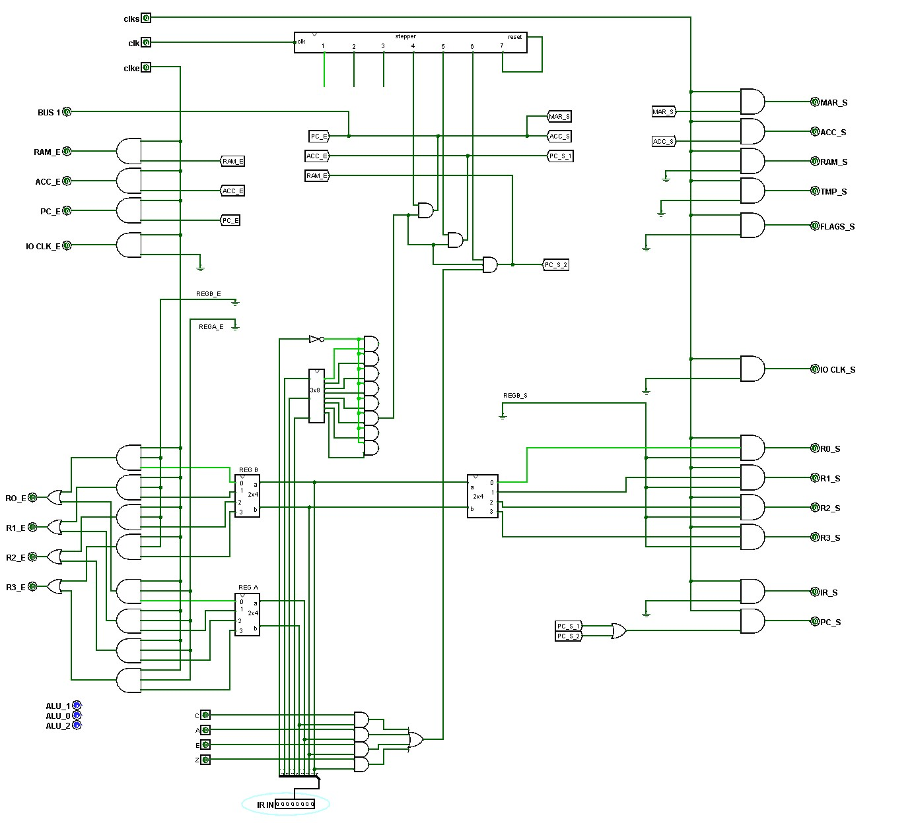

Jumps
Sections 14.5 – 14.8 | Estimated time: ~45 minutes
14.5 A jump is a write to the program counter
Every instruction so far has left the PC where fetch put it: pointing at the next byte. A jump is any instruction that puts something else there. Since the PC is a register on the bus, a jump is just a transfer that ends in pc_s. The only question is where the new address comes from.
JMPR R3 — from a register — byte 00110011
| Step | Drives the bus | Captures |
|---|
One transfer: R3 drives the bus, the PC captures it. Steps 5 and 6 are idle; the next fetch reads from wherever R3 pointed.
JMP a — from the next byte — bytes 01000000, a
| Step | Drives the bus | Captures |
|---|
Like DATA, the address lives in the byte after the instruction. Step 4 points the MAR at it (the PC already does); step 5 puts it straight into the PC. There is no need to add 1 to anything: the next instruction comes from a, not from after the address byte.
14.6 Jcaez: jump only if a flag says so
The conditional jump is 0101 caez, followed by an address byte. Its four low bits each select one flag: C (carry), A (A larger), E (equal), Z (zero). The jump is taken if any selected flag is 1. So JC is 01011000, JZ is 01010001, and JAE (“A larger or equal”) is 01010110.
JC a — bytes 01011000, a — with C = 1
| Step | Drives the bus | Captures |
|---|
The same instruction with C = 0
| Step | Drives the bus | Captures |
|---|
Look at steps 4 and 5: they are DATA’s steps 4 and 6. By the end of step 5 the PC already points past the address byte — the instruction has been set up as not taken. Step 6 then decides. If the condition holds, the RAM (still pointed at the address byte by the MAR) drives the bus and the PC captures it. If not, step 6 does nothing, and the next fetch carries on after the address. “Not taken” costs nothing, and no gate has to choose between two addresses.
The condition is four ANDs and an OR, and the result is ANDed into step 6’s two terms:
The flags come from your FLAGS circuit — the four MEM_1BITs set by the last ALU instruction or CLF. The control unit gets four new inputs for them.

14.7 Which flags to test
- After CMP, only A and E mean anything (Week 11).
CMP RA, RBcompares RA with RB:JAjumps if RA > RB,JEif they are equal,JAEif RA ≥ RB. NeverJZafter CMP. - After a shift, C is the bit that fell off the end.
MYSIM.txtdoesSHR R0, R0thenJCto ask “was the lowest bit of R0 a 1?” - After ADD, C is the carry out of bit 7 and Z says the 8-bit result is zero.
- A loop is a conditional jump backwards. Count a register down with
ADDof 11111111 (that is −1) and jump back while the result is not zero — for which you will need a flag that is 1 when you want to keep going. Page 4 builds one.
14.8 Branches and jumps
The syllabus calls this week “branch/jump implementation”. In MIPS (Week 7) a branch such as beq is PC-relative: its 16-bit field is an offset, counted in instructions, added to PC + 4. Your CPU’s conditional jump carries an absolute address in a whole byte. With 256 addresses, a whole byte reaches all of memory, so there is nothing to gain from an offset; MIPS, with a 32-bit address space and a 16-bit field, has no choice. The idea is the same in both: a conditional write to the PC, decided by a test the ALU has already made.
For branches and jumps in MIPS hardware, log into your Saylor CS301 account at the CS301 course page and open Unit 5: Designing a Processor; its datapath adds a second adder for the branch target.
Where you are
You can trace all three jumps and say when a conditional one is taken. Next page: the carry that comes back, the instruction that stops the clock, and loading a program from a file.